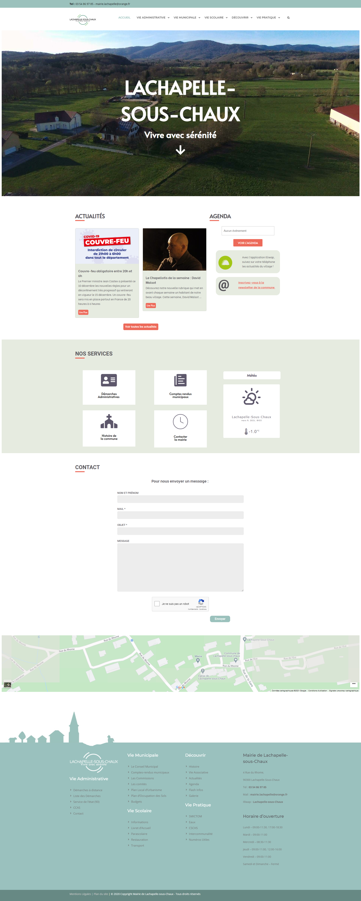

Lachapelle-Sous-Chaux
Septembre 2020 - Janvier 2021
Projet Collectif - Semestre 3
Présentation du projet
Qu'est-ce qu'une refonte de site ?
Une refonte de site web est un relooking d'un site déjà existant. Les refontes de sites web servent à mettre à jour le style graphique du site, les techniques utilisées pour la création du site ou bien, une meilleure accessibilité au contenus par le biais de la navigation dans le site web. Pour notre cas, nous devions effectuer la refonte du site web d'une mairie. L'objectif de cette refonte, était d'améliorer la qualité graphique du site afin qu'il soit plus agréable de le parcourir et de permettre à nos commanditaires d'ajouter du contenus à leur convenance.
Demande supplémentaire
On nous as demandés de faire des fiches tutoriels afin que nos commanditaires puissent comprendre l'utilisation du site web qu'ils ont reçu. Et pour ces fiches tutoriels, nous avions décidés en plus de la version papier, de faire une version pc qui nous a permis d'ajouter des vidéos pour les tutoriels afin de faciliter la compréhension des commanditaires.
Mon groupe de projet
J'ai réalisé ce projet collectif, avec Mathilde Vauquieres qui était notre cheffe de projet et notre responsable du design et avec Lou Segaud qui était notre responsable de la communication.
Mon rôle au sein de ce projet
J'ai été responsable du bon développement du site. Dans un premier temps, après avoir choisi Wordpress pour développer le site web, j'ai établi une liste de plugins afin de parvenir aux différents besoin de nos commanditaires lors de l'utilisation de leur site. Une fois établie, j'ai appris le fonctionnement de chacun de ces plugins et je me suis également renseigné sur l'hébergeur wev que nos commanditaires utilisaient, afin de pouvoir effectuer la mise en place du site web sans de problèmes. Puis dans un second temps, j'ai commencé le développement du site avec l'aide de mes collègues. J'ai également travaillé en parralèle sur le développement en HTML/CSS du guide Wordpress à destination des commanditaires. Et enfin, j'ai pu importer les sites sur l'hébergeur web de nos commanditaires.
Langages et logiciels utilisés :
Développement du site
Pour la refonte du site web nous avons décidé de partir sur un site plus sobre. Nous avons réduit le nombre de couleurs présentent sur le site. Nous avons réorganisé la navigation dans le site, pour qu'elle soit accessible pour tout le monde. Étant donné que le site existait déjà, nous n'avons eu que très peu besoin de remplir le site de contenus, il y avait déjà tous les éléments nécessaires pour un site web de mairie.
Lors de la découverte du projet, nous avons appris que les commanditaires ne connaissait pas le fonctionnement d'un CMS et de son utilisation. C'est pourquoi, nous avons décidé de choisir les plugins adéquats, qui puissent simplifier l'utilisation de Wordpress à nos commanditaires. Comme par exemple, Elementor ou Event Calendar WD. Pour le thème, nous avons choisi de créer un thème enfant, c'est-à-dire que nous sommes partis d'un thème existant et nous avons effectuer nous-mêmes les modifications nécessaires pour convenir à nos besoins et envies.
Page d'accueil
Présentation Responsive
Développement du Guide Wordpress
Pour ce guide, nous avons décidé de faire quelque chose de simple. Il y a tout d'abord la version papier qui répertorie tout les tutoriels dans un sommaire et qui guide l'utilisateur avec des explications écrites et des images. Puis, viens ensuite, la version pc qui propose en plus de cela quelques vidéos qui montre à l'utilisateur ce qu'il doit faire. Nos commanditaires vont donc avoir le choix en fonction de leurs préférences, d'utiliser le guide qui leur convient le mieux, pour la maintenance du site web.
Version papier
Version PC
Pour la version PC, nous avons présentés les tutoriels sous forme de cartes à thèmes. Puis, une fois le thème choisit on arrive soit sur le tutoriel, soit sur un menu qui propose plusieurs tutoriels dans le thème en question.